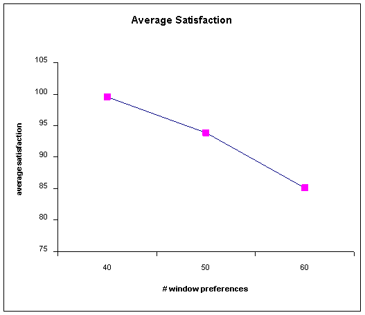
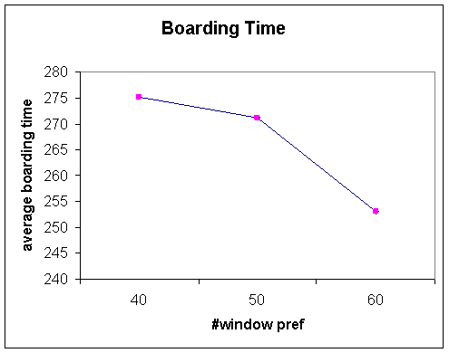

2006 Graduate Workshop in Computational Social Science Modeling
and Complexity
All Aboard
by Stephen Haptonstahl and Rimma Yusim
Problem:
Consider the following situation:
Around one hundred travelers are waiting in the passenger lounge of the
airport. The airline agent at the gate picks up the microphone and begins to
board the aircraft. What happens?
· Model, using whatever techniques you
wish, the above scenario.
- Explicitly state your model
and key assumptions.
- Summarize key results.
- Suggest some potentially
interesting future directions and questions for the model
Model:
The
objective of our model is to maximize the satisfaction of the passengers as
well as minimize the boarding time. We used simulation bottom-up approach to
this model. That is there is no social planner optimizing the behavior of passengers.
We allow for the composition of passengers’ preferences to change and analyze
the effect on the level of satisfaction and boarding time.
Assumptions:
·
100 passengers; full flight; 25
rows, 4 seats each.
·
Heterogeneous preferences: each passenger has
preferences over the seating –window, aisle, any.
·
Satisfaction of 1 is achieved when passenger’s
preferences are met, satisfaction of 0 –otherwise.
·
No prior assigned seating. The passenger gets a
specific seat once he boards the plane.
·
The boarding queue number is distributed randomly.
·
The time it takes to move one row is measured in one
unit of boarding time.
·
Finally, we assumed perfect foresight in our model.
That is passengers are able to predict what are the seating
intentions of those standing in front of them and adjust their own
decisions accordingly. This assumption allows us to ignore the two-way traffic
in the plane for now. We realize that this is rather restrictive assumption and
will try to relax it in the future.
The Dynamics:
The
queue before boarding is distributed randomly; there are no assigned seats.
Once the passenger starts to board, he has a specific goal in mind –window,
aisle or no preference. The satisfaction is reached if the preferences are met.
If the seat is unavailable, the passenger gets another random seat. If more than one passenger is interested in
one seat, the first one in line wins and the rest settle for any available seat
close by.
Theoretical prediction:
We
predict the overall satisfaction to increase with the rise in the number of
‘indifferent’ passengers and decrease otherwise. Thus, it is preferable to
board the passengers possessing particular preferences first and the
‘indifferent’ ones later. We observe the implication of this principle in the
boarding policy of some airline companies.
Those passengers who have strong preferences over their seating are
encouraged to choose their seats online, while those who agree to seat anywhere
are assigned in the last minute.
The results:
1)
We
were interested in analyzing the change in overall satisfaction associated with
changes in distribution of initial preferences. The simulation yielded the
following results after 10 runs: holding the number of “any” preferences constant and equal
to 20, the increase in the window preferences leads to decrease in overall satisfaction.

Thus,
we observe that the symmetric distribution of preferences: 40-window , 40-aisle and 20-any yields the maximum satisfaction
of 100.
2)
The second result of the simulation refers to boarding time. The average
boarding time decreases with less symmetric distribution of preferences.

This
seemingly counterintuitive result can be explained largely by the Perfect
Foresight assumption. If the passenger wants a seat (window or aisle) that is
in the back but cannot have it because someone ahead has claimed it, they
choose another seat at random, and this random seat will tend to be
closer. If they want one toward the
front, the random seat they choose will be, on average, farther away. However, this latter scenario may be less
likely because the person ahead taking the desired seat can have more people
behind him when closer to the back of the aircraft than when in the front of
the aircraft, and he would only be in the back when heading toward a seat in
the back.
Possible extensions and future work:
·
Introduce a new type of passengers-pairs. They want
to be seated next to each other. Maximum satisfaction is achieved if this
requirement is fulfilled; the next best choice is to answer the seating
preferences of each individual.
·
Refine the satisfaction measure: the satisfaction
decreases the further the passenger has to move from the desired seat.
·
Introduce the problem of bags allocation on the
aircraft.
·
Allow for variability in walking speed of the
passengers.
·
Compare the satisfaction and boarding time with
assigned-seating policy.
·
Allow for imperfect information and simulate taking
into an account the possibility of two-way traffic in the aisle.